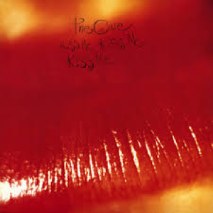

Song 1: Bad Bunny - Bailie Inolvidable (Unforgettable Dance)

Even though this song is in spanish, once fully translated you sings a beatiuful story of
an Unforgettable dance with some one you once loved before, even though the song yearns for that
past love and praising them of that romance, the song touches the person hearts by saying, "mentras uno esta vivo uno tiene que amar los mas que pueda" which
translates to "While one is alive, one should love as much one can"
Song 2: The Cure - Just like Heaven

Undoubtly one of my favorite songs to listen and to deciate espically during
this time of valetines, I wish I could've heard this song live beceause it has such a
beatiuful tone and I would replay it so many times to remind me that love
is truly a beatiuful thing.
Song 3: Zombies - Childish Gambino

I know I said undoubtly before but hear me out this is the underrated song from Awaken My Love album
this song should pop out like the other songs from this album like Redbone, and
Me and your Mama, with the guitar riffs playing on song makes this song so underrated gem
mine. I think listening to it will make you understand what I'm trying to say. Without a doubt a listen!